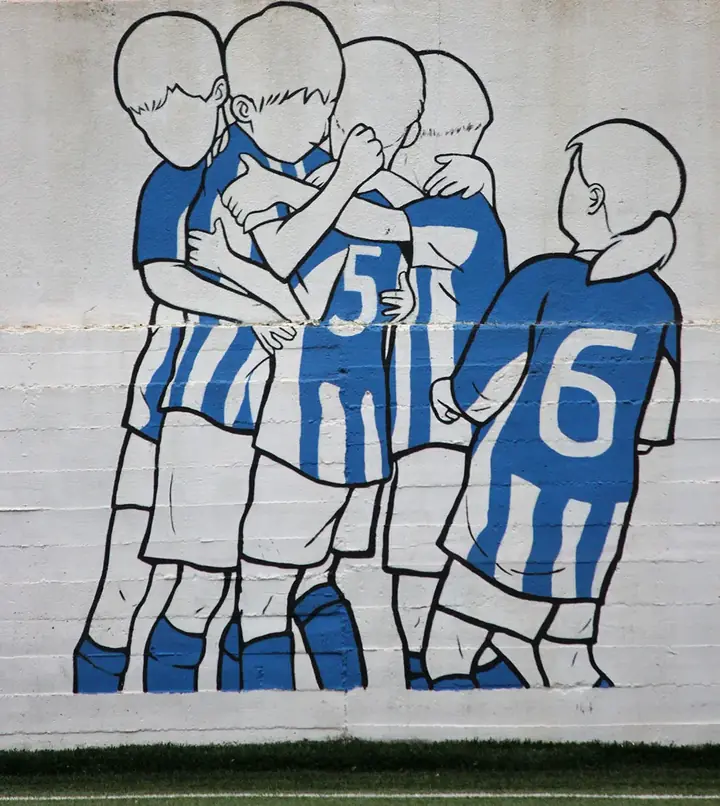
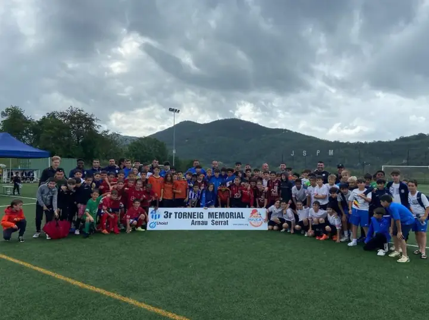
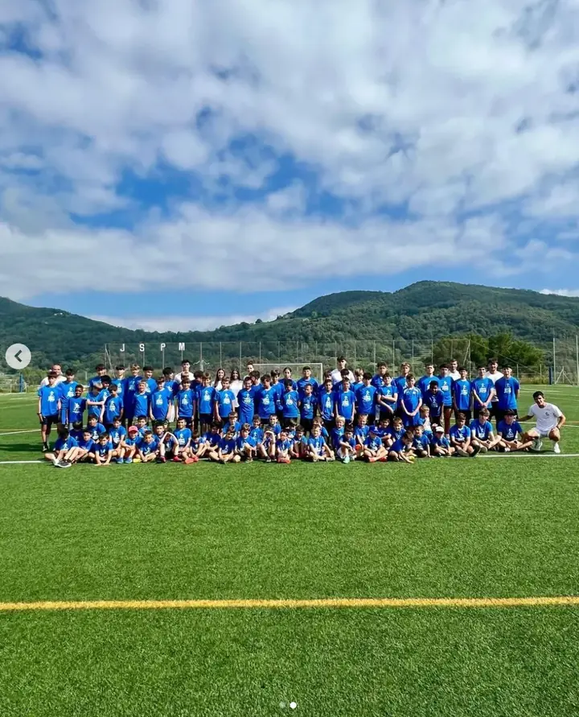
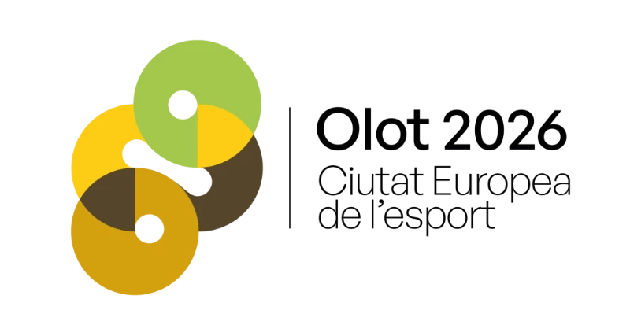

JSPM
El club

Més de 50 anys al Pla de Dalt
Fundat el 1968 i federat des del 1972, el JSPM juga al camp municipal del carrer Pic del Bac, al cor del barri. Avui hi formem més de 200 jugadors amb 26 entrenadors.
Joventut Sant Pere Màrtir · Olot
Futbol base i amateur al Pla de Dalt d'Olot, des de 1968.
Vull jugar al JSPM
Fundat el 1968 i federat des del 1972, el JSPM juga al camp municipal del carrer Pic del Bac, al cor del barri. Avui hi formem més de 200 jugadors amb 26 entrenadors.

Torneig aleví de futbol 7 en record de l'Arnau Serrat, que recapta fons per a la Casa dels Xuklis.

Gaudeix del futbol al campus del club. Dates, horaris i inscripcions a la web del campus.
Equipacions, roba d'entrenament, xandalls i motxilles amb l'escut del JSPM.
Ens fan costat

Olot 2026 · Ciutat Europea de l'Esport